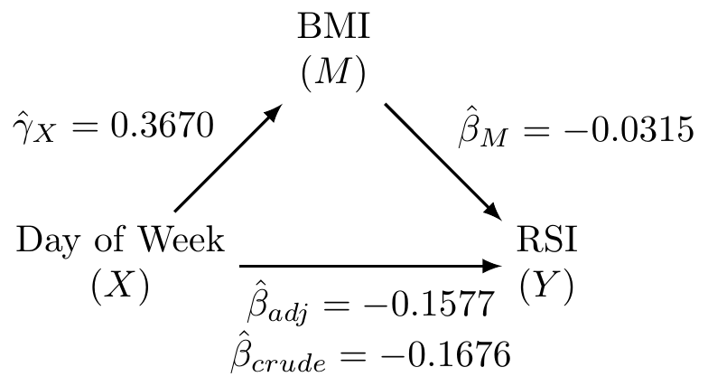
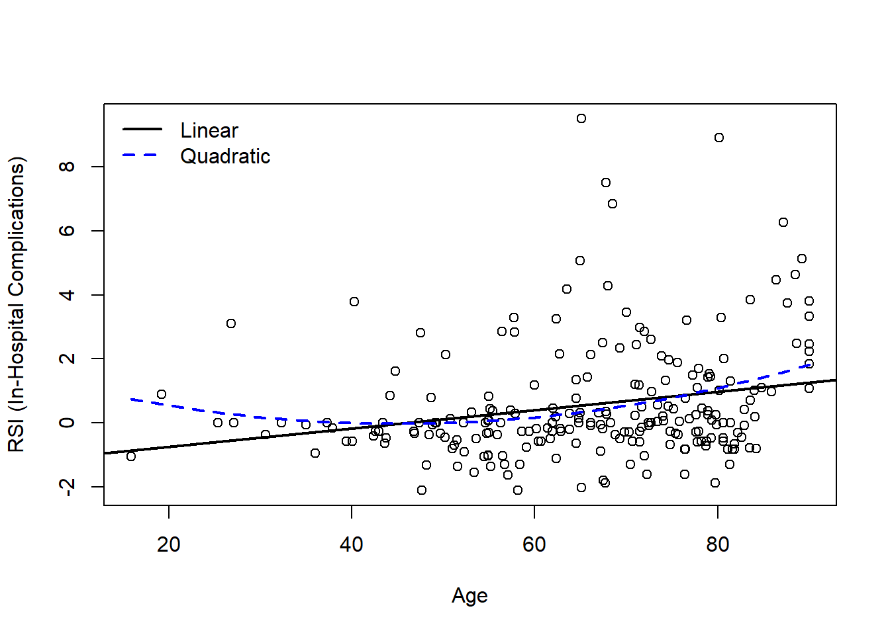
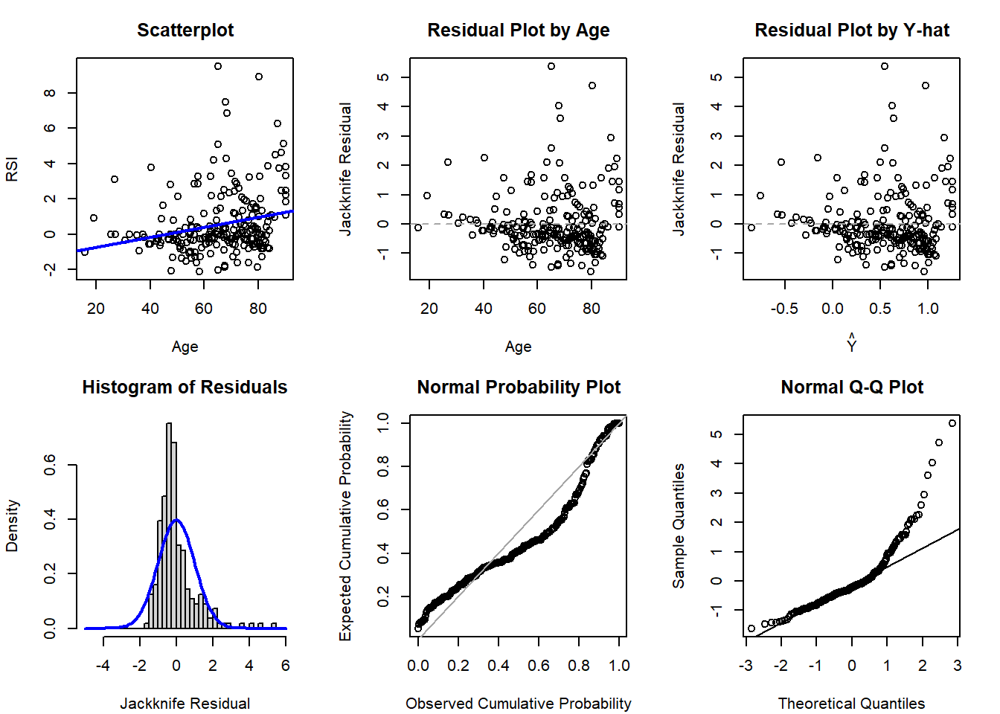
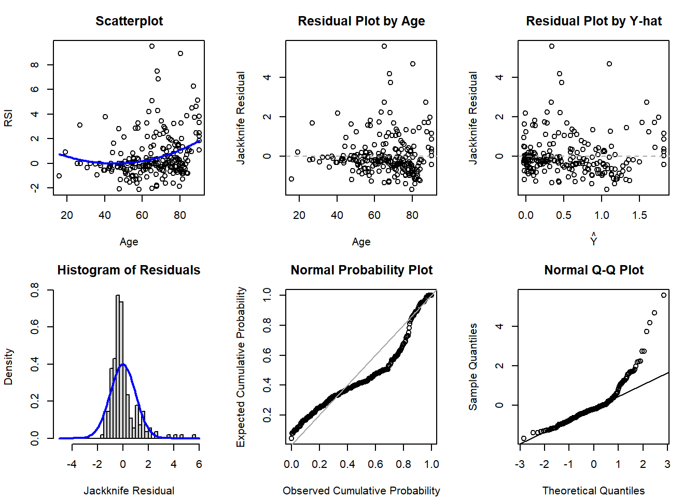

Code
dat <- read.csv('../../.data/Surgery_Timing.csv')Alex Kaizer
University of Colorado-Anschutz Medical Campus
This page includes the solutions to the optional practice problems for the given week. If you want to see a version without solutions please click here. Data sets, if needed, are provided on the BIOS 6618 Canvas page for students registered for the course.
This week’s extra practice exercises focus on the wonderfully wide world of applications for MLR: confounding, mediation, interactions, general linear hypothesis testing, and polynomial regression.
All of our exercises will use the surgery timing data set (Surgery_Timing.csv) provided by the TSHS section of the American Statistical Association. We can load the data into R with the following line of code:
The following table summarizes the variables we will be exploring and provide brief definitions:
| Variable | Code Name | Description |
|---|---|---|
| Risk Stratification Index (RSI) for In-Hospital Complications | complication_rsi |
Estimated risk of having an in-hospital complication. |
| Day of Week | dow |
Weekday surgery took place (1=Monday, 5=Friday) |
| Operation Time | hour |
Timing of operation during the day (06:00 to 19:00) |
| Phase of Moon | moonphase |
Moon phase during procedure (1=new, 2=first quarter, 3=full, 4=last quarter) |
| Age | age |
Age in years |
| BMI | bmi |
Body mass index (kg/m2) |
| AHRQ Procedure Category | ahrq_ccs |
US Agency for Healthcare Research and Quality’s Clinical Classifications Software procedure category |
| Complication Observed | complication |
In-hospital complication |
| Diabetes | baseline_diabetes |
Diabetes present at baseline |
We will use linear regression to examine the relationship between the outcome of RSI for in-hospital complications with surgery on a Monday/Tuesday (versus Wednesday/Thursday/Friday) and moon phase to answer the following exercises:
What is the unadjusted (crude) estimate for the association between RSI and day of the week? Write a brief, but complete, summary of the relationship between RSI and day of the week. Hint: you will need to create a new variable for day of the week.
Solution:
Call:
lm(formula = complication_rsi ~ AK_mt, data = dat)
Residuals:
Min 1Q Median 3Q Max
-4.3843 -0.4943 0.0757 0.4333 13.8033
Coefficients:
Estimate Std. Error t value Pr(>|t|)
(Intercept) -0.335689 0.008956 -37.48 <2e-16 ***
AK_mtTRUE -0.167634 0.013534 -12.39 <2e-16 ***
---
Signif. codes: 0 '***' 0.001 '**' 0.01 '*' 0.05 '.' 0.1 ' ' 1
Residual standard error: 1.201 on 31999 degrees of freedom
Multiple R-squared: 0.004772, Adjusted R-squared: 0.004741
F-statistic: 153.4 on 1 and 31999 DF, p-value: < 2.2e-16 2.5 % 97.5 %
(Intercept) -0.3532430 -0.3181357
AK_mtTRUE -0.1941607 -0.1411073There is a significant relationship between RSI for in-hospital complications and day of week (M/T vs. W/Th/F) (p<0.001). On average, RSI is 0.17 lower (95% CI: 0.14 to 0.19 lower) on M/T compared to W/Th/F surgeries.
Adjusting for the effect of moon phase, what is the adjusted estimate for the association between RSI and day of the week? Write a brief, but complete, summary of the relationship between RSI and day of the week adjusting for moon phase.
Solution:
Call:
lm(formula = complication_rsi ~ AK_mt + as.factor(moonphase),
data = dat)
Residuals:
Min 1Q Median 3Q Max
-4.3828 -0.4928 0.0772 0.4278 13.8247
Coefficients:
Estimate Std. Error t value Pr(>|t|)
(Intercept) -0.32039 0.01490 -21.507 <2e-16 ***
AK_mtTRUE -0.16740 0.01354 -12.369 <2e-16 ***
as.factor(moonphase)2 -0.03689 0.01911 -1.930 0.0536 .
as.factor(moonphase)3 -0.00707 0.01914 -0.369 0.7118
as.factor(moonphase)4 -0.01682 0.01909 -0.881 0.3782
---
Signif. codes: 0 '***' 0.001 '**' 0.01 '*' 0.05 '.' 0.1 ' ' 1
Residual standard error: 1.201 on 31996 degrees of freedom
Multiple R-squared: 0.004904, Adjusted R-squared: 0.00478
F-statistic: 39.42 on 4 and 31996 DF, p-value: < 2.2e-16 2.5 % 97.5 %
(Intercept) -0.34959437 -0.2911952782
AK_mtTRUE -0.19393341 -0.1408770162
as.factor(moonphase)2 -0.07434743 0.0005763537
as.factor(moonphase)3 -0.04458653 0.0304459049
as.factor(moonphase)4 -0.05423393 0.0205935279There is a significant relationship between RSI for in-hospital complications and day of week (M/T vs. W/Th/F) (p<0.001). After accounting for moon phase, on average, RSI is 0.17 lower (95% CI: 0.14 to 0.19 lower) on M/T compared to W/Th/F surgeries.
Is moon phase a confounder of the association between RSI and day of the week based on the operational criterion? Should you report the results from (A) or (B)? Justify your answer.
Solution:
Moon phase is not a confounder by the operational definition, since it does not greatly change our point estimate of M/T vs. W/Th/F:
\[ \frac{|0.167634 - 0.16740|}{0.167634} \times 100 = 0.1396% \]
While there is no rigid threshold for a change that is “big” enough, this is rather small and <10% or <20% are commonly used to rule out potential confounding with the operational definition.
We will use linear regression to examine the relationship between the outcome of RSI for in-hospital complications with surgery on a Monday/Tuesday (versus Wednesday/Thursday/Friday) and BMI of the patient potential mediator to complete the following exercises:
Fit the three fundamental models of mediation analysis and fill in the following DAG:

Solution:
(Intercept) AK_mtTRUE
-0.3356893 -0.1676340 (Intercept) AK_mtTRUE bmi
0.57313211 -0.15765353 -0.03148069 (Intercept) AK_mtTRUE
29.290095 0.367003 What is the proportion/percent mediated by age?
Solution:
The proportion mediated is \(\frac{\text{indirect effect}}{\text{total effect}} = \frac{\hat{\beta}_{crude} - \hat{\beta}_{adj}}{\hat{\beta}_{crude}} = \frac{-0.1676 - (-0.1577)}{-0.1676} = 0.0591\). This corresponds to the percent mediated of \(0.0591 \times 100 = 5.91\%\).
What is the 95% CI and corresponding p-value for the proportion/percent mediated by age using the normal approximation to estimate the standard error (i.e., Sobel’s test)?
Solution:
We first need to calculate the standard error for our indirect effect:
\[ SE(\hat{\beta}_{crude} - \hat{\beta}_{adj}) = \sqrt{{\hat{\gamma}}_X^2\left(SE\left({\hat{\beta}}_M\right)\right)^2+{\hat{\beta}}_M^2\left(SE\left({\hat{\gamma}}_X\right)\right)^2} \]
We can find this information in our coefficient tables:
Estimate Std. Error t value Pr(>|t|)
(Intercept) 0.57313211 0.0290929009 19.70007 7.953691e-86
AK_mtTRUE -0.15765353 0.0138026533 -11.42197 3.773477e-30
bmi -0.03148069 0.0009427987 -33.39068 7.305638e-240 Estimate Std. Error t value Pr(>|t|)
(Intercept) 29.290095 0.05731452 511.041478 0.000000e+00
AK_mtTRUE 0.367003 0.08637699 4.248851 2.155467e-05\[ SE(\hat{\beta}_{crude} - \hat{\beta}_{adj}) = \sqrt{(0.3670)^2(0.0009)^2 + (-0.0315)^2 (0.0864)^2} = 0.0027 \]
Our 95% CI for the indirect effect is
\[ (-0.1676 - (-0.1577)) \pm 1.96 \times 0.0027 = (-0.015, -0.005) \]
This corresponds to a 95% CI for our proportion mediated of:
\[ \left(\frac{-0.005}{-0.1676}, \frac{-0.015}{-0.1676} \right) = (0.0298, 0.0895)) \]
We are 95% confident that the proportion mediated by BMI is betwee 2.98% and 8.95%.
Our p-value is calculated from referencing the standard normal distribution (per Sobel’s test):
\[ Z = \frac{\text{indirect effect}}{SE(\hat{\beta}_{crude} - \hat{\beta}_{adj})} = \frac{-0.0099}{0.0027} = -3.67 \]
This corresponds to a p-value of 2 * pnorm(-3.67)=2.4^{-4}, which is less than 0.05.
Note, that although this proportion mediated is not very large, our larger sample size may be powered enough to detect even weak mediation relationships.
Use linear regression to examine the relationship between RSI for in-hospital complications and BMI. In this exercise you will examine whether the magnitude of the association between RSI (the response) and BMI (the primary explanatory variable) depends on whether the patient has diabetes.
Write down the fitted regression equation for the regression of RSI on BMI, diabetes, and the interaction between the two. Provide an interpretation for each of the coefficients in the model (including the intercept).
Solution:
Estimate Std. Error t value Pr(>|t|)
(Intercept) 0.53713273 0.031985132 16.793200 5.472708e-63
bmi -0.03156706 0.001080522 -29.214640 6.452865e-185
baseline_diabetes -0.64875563 0.082053863 -7.906461 2.742595e-15
bmi:baseline_diabetes 0.01223915 0.002424084 5.048979 4.468924e-07
2.5 % 97.5 %
(Intercept) 0.474440377 0.59982508
bmi -0.033684938 -0.02944919
baseline_diabetes -0.809585030 -0.48792624
bmi:baseline_diabetes 0.007487831 0.01699046Our fitted regression model is
\[ \hat{Y} = 0.537 + -0.032 \times \text{BMI} + -0.649 \times \text{diabetes} + 0.012 \times \text{BMI} \times \text{diabetes} \]
\(\hat{\beta}_0 = 0.537\): The expected RSI for patients with a 0 kg/m2 BMI and who do not have diabetes is 0.537 points.
\(\hat{\beta}_{bmi}=-0.032\): For patients who do not have diabetes, RSI decreases, on average, by 0.032 points for 1 kg/m2 increase in BMI.
\(\hat{\beta}_{diabetes}=-0.649\): For patients with a 0 kg/m2 BMI, RSI, on average, is 0.649 points lower for those with diabetes.
\(\hat{\beta}_{bmi*diabetes} = 0.012\): This is the difference between the effect of BMI for those with diabetes compared to those without diabetes. For patients with diabetes, a one kg/m2 increase in BMI results in an RSI that is 0.012 units higher, on average.
Test whether the relationship between RSI and BMI depends on whether the patient had diabetes.
Solution:
From our model results in 3a, the relationship between RSI and BMI is significantly different for those with diabetes compared to those without diabetes (p=4.47e-07<0.001).
What is the regression equation for patients who don’t have diabetes?
Solution:
\[ \hat{Y} = 0.537 + -0.032 \times \text{BMI} + -0.649 \times 0 + 0.012 \times \text{BMI} \times 0 = 0.537 + -0.032 \times \text{BMI} \]
What is the regression equation for patients with diabetes?
Solution:
\[ \hat{Y} = 0.537 + -0.032 \times \text{BMI} + -0.649 \times 1 + 0.012 \times \text{BMI} \times 1 = -0.112 + -0.020 \times \text{BMI} \]
Create a scatterplot of RSI versus BMI, using different symbols and separate regression lines for patients with and without diabetes.
Solution:
Test if the slope for BMI for those who don’t have diabetes is significantly different from 0.
Solution:
For this question we can directly use the \(t\)-test results from our table of coefficients in 3A. In that output we see that p<2e-16 for bmi, so we reject the null hypothesis that the slope is significantly different from 0 for those who didn’t have diabetes.
Test if the slope for BMI for those who do have diabetes is significantly different from 0.
Solution:
For this question we can approach it by either calculating the standard error of \(\hat{\beta}_{bmi} + \hat{\beta}_{bmi*diabetes}\) or using reverse coding.
Calculating the standard error using our original model requires the variance-covariance matrix:
(Intercept) bmi baseline_diabetes
(Intercept) 1.023049e-03 -3.363775e-05 -1.023049e-03
bmi -3.363775e-05 1.167528e-06 3.363775e-05
baseline_diabetes -1.023049e-03 3.363775e-05 6.732836e-03
bmi:baseline_diabetes 3.363775e-05 -1.167528e-06 -1.923745e-04
bmi:baseline_diabetes
(Intercept) 3.363775e-05
bmi -1.167528e-06
baseline_diabetes -1.923745e-04
bmi:baseline_diabetes 5.876182e-06With this information we can calculate our standard error:
\(\begin{aligned} SE(\hat{\beta}_{bmi} + \hat{\beta}_{bmi*diabetes}) =& \sqrt{Var(\hat{\beta}_{bmi}) + Var(\hat{\beta}_{bmi*diabetes}) + 2 \times Cov(\hat{\beta}_{bmi},\hat{\beta}_{bmi*diabetes})} \\ =& \sqrt{1.167528e-06 + 5.876182e-06 + 2 \times (-1.167528e-06)} \\ =& \sqrt{4.708654e-06} \\ =& 0.002169943 \end{aligned}\)
Our estimated 95% CI using a critical value of 1.96 (i.e., qt(0.975, 28707) based on \(n=28711\) with complete data for BMI and diabetes status and subtracting four degrees of freedom) is
\[ -0.020 \pm 1.96 \times 0.002169943 = (-0.0243, -0.0157) \]
We have \(t=\frac{-0.020}{0.002169943}=-9.217\) and a p-value of 2 * pt(-9.217,28707,lower.tail=T)=0.
We can verify this result if we reverse code baseline_diabetes:
# create reverse coding where not_first2y=1 if they did NOT live in first 2 years
dat$AK_no_diabetes <- abs(dat$baseline_diabetes - 1)
# fit model with reverse coding
mod3_reverse <- lm(complication_rsi ~ bmi + AK_no_diabetes + bmi*AK_no_diabetes, data=dat)
round( cbind(summary(mod3_reverse)$coefficients, confint(mod3_reverse)), 4) Estimate Std. Error t value Pr(>|t|) 2.5 % 97.5 %
(Intercept) -0.1116 0.0756 -1.4772 0.1396 -0.2597 0.0365
bmi -0.0193 0.0022 -8.9071 0.0000 -0.0236 -0.0151
AK_no_diabetes 0.6488 0.0821 7.9065 0.0000 0.4879 0.8096
bmi:AK_no_diabetes -0.0122 0.0024 -5.0490 0.0000 -0.0170 -0.0075We can see that we arrive at the same results (with slight differences due to rounding) when interpreting bmi in our reverse coded model results.
Provide a brief, but complete, summary of the relationship between RSI and BMI, accounting for any observed interaction with diabetes (i.e., if there is a significant interaction, interpret those who do and don’t have diabetes separately).
Solution:
The relationship between BMI and RSI differs significantly according to whether or not the patient has diabetes (p<0.001).
There is a significant association between BMI and RSI for patients without diabetes (p < 0.001). For these patients, RSI decreases an average of 0.032 units for every one kg/m2 increase in BMI (95% CI: 0.0294 to 0.0337 units lower).
There is a significant association between BMI and RSI among patients with diabetes (p < 0.001). For these patients, RSI decreases an average of 0.020 units for every one kg/m2 increase in BMI (95% CI: 0.0157 to 0.0243 units lower).
The difference in these relationships for patients with and without diabetes can be seen in the scatterplot with regression fits for each group, where those without diabetes have a slightly stronger negative linear relationship with RSI as BMI increases.
For this exercise, subset the data set to only those with an in-hospital complication recorded and those who have hip replacements (i.e., dat$ahrq_ccs=='Hip replacement; total and partial').
Fit a simple linear regression model for the outcome of RSI for in-hospital complications with age as the predictor.
Solution:
Fit a polynomial regression model that adds a squared term for age.
Solution:
Create a scatterplot of the data and add the predicted regression lines for each model.
Solution:
plot(x=dat4$age, y=dat4$complication_rsi, xlab='Age', ylab='RSI (In-Hospital Complications)')
abline(lm4, lwd=2) # plot SLR predicted regression line
# predict Y-hat from regression model with age and age^2, add to scatterplot
xval <- seq(min(dat4$age,na.rm=T), max(dat4$age,na.rm=T), length.out=100)
y2 <- predict(lm4_2, newdata = data.frame(age=xval))
lines(x=xval, y=y2, col='blue', lwd=2, lty=2)
# add legend
legend('topleft', bty='n', col=c('black','blue'), lwd=c(2,2), lty=c(1,2), legend=c('Linear','Quadratic'))
Based on the model output and figure, is there evidence that a quadratic model may be more appropriate than the simple linear regression model?
Solution:
Visually, both models may be appropriate. There are fewer young patients, so it can be challenging to definitely identify if the linear or quadratic model is more appropriate. While we know that age and age2 are highly correlated, we can examine our summary output to note that age2 is significant in the quadratic model (p<0.05):
Call:
lm(formula = complication_rsi ~ age, data = dat4)
Residuals:
Min 1Q Median 3Q Max
-2.8344 -1.0164 -0.4061 0.5047 8.9619
Coefficients:
Estimate Std. Error t value Pr(>|t|)
(Intercept) -1.307892 0.535371 -2.443 0.015352 *
age 0.028510 0.007953 3.585 0.000415 ***
---
Signif. codes: 0 '***' 0.001 '**' 0.01 '*' 0.05 '.' 0.1 ' ' 1
Residual standard error: 1.772 on 221 degrees of freedom
Multiple R-squared: 0.05495, Adjusted R-squared: 0.05067
F-statistic: 12.85 on 1 and 221 DF, p-value: 0.0004152
Call:
lm(formula = complication_rsi ~ age + I(age^2), data = dat4)
Residuals:
Min 1Q Median 3Q Max
-2.9407 -0.9988 -0.3736 0.4102 9.1707
Coefficients:
Estimate Std. Error t value Pr(>|t|)
(Intercept) 1.8377058 1.4762057 1.245 0.2145
age -0.0827367 0.0493547 -1.676 0.0951 .
I(age^2) 0.0009173 0.0004018 2.283 0.0234 *
---
Signif. codes: 0 '***' 0.001 '**' 0.01 '*' 0.05 '.' 0.1 ' ' 1
Residual standard error: 1.755 on 220 degrees of freedom
Multiple R-squared: 0.07683, Adjusted R-squared: 0.06843
F-statistic: 9.154 on 2 and 220 DF, p-value: 0.0001517We can also calculate the MSE to see if it decreases in the quadratic model relative to the first-order model without any polynomial terms:
[1] 3.110576[1] 3.038569Since the change in MSE is not very large (3.11 to 3.04), we might argue the more parsimonious SLR model may be preferred given the limited improvement relative to the increased complexity.
Finally, we may want to evalute the diagnostic plots to see if there is evidence to support the more complex model:
# SLR diagnostics (no quadratic term)
par(mfrow=c(2,3), mar=c(4.1,4.1,3.1,2.1))
# Scatterplot of Y-X
plot(x=dat4$age, y=dat4$complication_rsi, xlab='Age', ylab='RSI',
main='Scatterplot', cex=1); abline( lm4, col='blue', lwd=2 )
# Scatterplot of residuals by X
plot(x=dat4$age, y=rstudent(lm4), xlab='Age', ylab='Jackknife Residual',
main='Residual Plot by Age', cex=1); abline(h=0, lty=2, col='gray65')
# Scatterplot of residuals by predicted values
plot(x=predict(lm4), y=rstudent(lm4), xlab=expression(hat(Y)), ylab='Jackknife Residual',
main='Residual Plot by Y-hat', cex=1); abline(h=0, lty=2, col='gray65')
# Histogram of jackknife residuals with normal curve
hist(rstudent(lm4), xlab='Jackknife Residual',
main='Histogram of Residuals', freq=F, breaks=seq(-5,6,0.25));
curve( dnorm(x,mean=0,sd=1), lwd=2, col='blue', add=T)
# PP-plot
plot( ppoints(length(rstudent(lm4))), sort(pnorm(rstudent(lm4))),
xlab='Observed Cumulative Probability',
ylab='Expected Cumulative Probability',
main='Normal Probability Plot', cex=1);
abline(a=0,b=1, col='gray65', lwd=1)
# QQ-plot
qqnorm( rstudent(lm4) ); qqline( rstudent(lm4) )
# SLR diagnostics (no quadratic term)
par(mfrow=c(2,3), mar=c(4.1,4.1,3.1,2.1))
# Scatterplot of Y-X
plot(x=dat4$age, y=dat4$complication_rsi, xlab='Age', ylab='RSI',
main='Scatterplot', cex=1)
# predict Y-hat from regression model with age and age^2, add to scatterplot
xval <- seq(min(dat4$age,na.rm=T), max(dat4$age,na.rm=T), length.out=100)
y2 <- predict(lm4_2, newdata = data.frame(age=xval))
lines(x=xval, y=y2, col='blue', lwd=2)
# Scatterplot of residuals by X
plot(x=dat4$age, y=rstudent(lm4_2), xlab='Age', ylab='Jackknife Residual',
main='Residual Plot by Age', cex=1); abline(h=0, lty=2, col='gray65')
# Scatterplot of residuals by predicted values
plot(x=predict(lm4_2), y=rstudent(lm4_2), xlab=expression(hat(Y)), ylab='Jackknife Residual',
main='Residual Plot by Y-hat', cex=1); abline(h=0, lty=2, col='gray65')
# Histogram of jackknife residuals with normal curve
hist(rstudent(lm4_2), xlab='Jackknife Residual',
main='Histogram of Residuals', freq=F, breaks=seq(-5,6,0.25));
curve( dnorm(x,mean=0,sd=1), lwd=2, col='blue', add=T)
# PP-plot
plot( ppoints(length(rstudent(lm4_2))), sort(pnorm(rstudent(lm4_2))),
xlab='Observed Cumulative Probability',
ylab='Expected Cumulative Probability',
main='Normal Probability Plot', cex=1);
abline(a=0,b=1, col='gray65', lwd=1)
# QQ-plot
qqnorm( rstudent(lm4_2) ); qqline( rstudent(lm4_2) )
Based on the diagnostic plots, it appears both models are impacted by violations of the normality (histogram, PP, and QQ plots all have departures from normality) and potentially homoscedasticity assumption (residual plot by age might have a bit of a fan shape, but Y-hat not as much). Regardless, if just comparing to select between the first- and second-order model, there is not much evidence supporting a drastic improvement with the more complicated model with the quadratic polynomial term.
Fit a linear regression model for the outcome of RSI for in-hospital complication with day of the week as a predictor for all days.
Solution:
Here we will fit our model and view the summary output for use in later problems.
Call:
glm(formula = complication_rsi ~ as.factor(dow), data = dat)
Coefficients:
Estimate Std. Error t value Pr(>|t|)
(Intercept) -0.51529 0.01435 -35.907 < 2e-16 ***
as.factor(dow)2 0.02393 0.02029 1.179 0.238
as.factor(dow)3 0.18989 0.02088 9.092 < 2e-16 ***
as.factor(dow)4 0.15168 0.02149 7.057 1.73e-12 ***
as.factor(dow)5 0.19485 0.02105 9.258 < 2e-16 ***
---
Signif. codes: 0 '***' 0.001 '**' 0.01 '*' 0.05 '.' 0.1 ' ' 1
(Dispersion parameter for gaussian family taken to be 1.442609)
Null deviance: 46388 on 32000 degrees of freedom
Residual deviance: 46158 on 31996 degrees of freedom
AIC: 102549
Number of Fisher Scoring iterations: 2Our fitted regression equation is
\[\hat{Y} = -0.52 + 0.02 I_{T} + 0.19 I_{W} + 0.15 I_{Th} + 0.19 I_{F} \]
Using a general linear hypothesis, test if the mean RSI on Tuesday and Wednesday are equal to each other.
Solution:
First, if we want to compare the mean RSI value for each day we know from our reference cell model we would have an estimate of the mean for each group as \(\mu_{T} = \beta_0 + \beta_T\) and \(\mu_{W} = \beta_0 + \beta_{W}\). However, since our intercept \(\beta_0\) is in both, it will cancel out when testing our null hypothesis that \(\mu_T = \mu_W\).
Therefore, this tests \(H_0\colon \beta_{T} = \beta_{W}\), or equivalently \(H_0\colon \beta_{T} - \beta_{W} = 0\). We can further imagine this as \(1 \times \beta_{T} - 1 \times \beta_{W}\), so our matrix is \(\mathbf{c} = \begin{pmatrix} 0 & 1 & -1 & 0 & 0 \end{pmatrix}\):
Warning: package 'gmodels' was built under R version 4.4.1
Test of General Linear Hypothesis
Call:
glh.test(reg = mod5, cm = c_matrix_5b, d = rep(0, nrow(c_matrix_5b)))
F = 63.1627, df1 = 1, df2 = 31996, p-value = 1.998e-15 Since \(p<0.05\), we would reject the null hypothesis and conclude that Tuesday and Wednesday have different mean RSI values.
Since we only wanted to compare if Tuesday and Wednesday were equal, we could also have fit a model with the reference category for our categorical variable changed to Tuesday or Wednesday:
Call:
glm(formula = complication_rsi ~ dow_v2, data = dat)
Coefficients:
Estimate Std. Error t value Pr(>|t|)
(Intercept) -0.49136 0.01435 -34.247 < 2e-16 ***
dow_v2W 0.16596 0.02088 7.947 1.97e-15 ***
dow_v2Th 0.12775 0.02149 5.945 2.80e-09 ***
dow_v2F 0.17093 0.02104 8.122 4.74e-16 ***
dow_v2M -0.02393 0.02029 -1.179 0.238
---
Signif. codes: 0 '***' 0.001 '**' 0.01 '*' 0.05 '.' 0.1 ' ' 1
(Dispersion parameter for gaussian family taken to be 1.442609)
Null deviance: 46388 on 32000 degrees of freedom
Residual deviance: 46158 on 31996 degrees of freedom
AIC: 102549
Number of Fisher Scoring iterations: 2In our regression output with Tuesday as the reference category, we see we have a similar p-value and that \(t^2 = 7.946^2 = 63.139\), which is approximately equal to our \(F\)-statistic from the GLHT (differing slightly due to rounding).
Using a general linear hypothesis, test if the mean RSI on Monday is equal to two times the RSI on Thursday.
Solution:
Here we know that for our model fit in 5a, \(\mu_M = \beta_0\) and \(\mu_{Th} = \beta_0 + \beta_{Th}\). Therefore this hypothesis is testing the null that \(\mu_M = 2 \times \mu_{Th}\). Plugging in our regression coefficients we have \(\beta_0 = 2 \times (\beta_0 + \beta_{Th})\). This can be rearranged to show that \(-\beta_0 + 2\beta_{Th} = 0\):
\[ H_0 \colon \begin{pmatrix} -1 & 0 & 0 & 2 & 0 \end{pmatrix} \begin{pmatrix} \beta_0 \\ \beta_T \\ \beta_W \\ \beta_{Th} \\ \beta_{F} \end{pmatrix} = 0 \]
Test of General Linear Hypothesis
Call:
glh.test(reg = mod5, cm = c_matrix_5c, d = rep(0, nrow(c_matrix_5c)))
F = 232.9077, df1 = 1, df2 = 31996, p-value = < 2.2e-16 Since \(p < 0.05\), we reject \(H_0\) and conclude that the mean RSI on Monday is not equal to two times the mean RSI on Thursday.
Using a general linear hypothesis, test both 5b and 5c simultaneously.
Solution:
For 5b and 5c, we tested each hypothesis on its own. However, we could test both simultaneously:
\[ H_0 \colon \begin{pmatrix} 0 & 1 & -1 & 0 & 0 \\ -1 & 0 & 0 & 2 & 0 \end{pmatrix} \begin{pmatrix} \beta_0 \\ \beta_T \\ \beta_W \\ \beta_{Th} \\ \beta_{F} \end{pmatrix} = \begin{pmatrix} 0 \\ 0 \end{pmatrix} \]
Test of General Linear Hypothesis
Call:
glh.test(reg = mod5, cm = c_matrix_5d, d = rep(0, nrow(c_matrix_5d)))
F = 148.0352, df1 = 2, df2 = 31996, p-value = < 2.2e-16 Unsurprisingly, given our previous results with both being very significant on their own, this result is still also significant since \(p<0.001\). In other words, our results suggests that at least one null hypothesis is rejected.
---
title: "Week 11 Practice Problems: Solutions"
author:
name: Alex Kaizer
roles: "Instructor"
affiliation: University of Colorado-Anschutz Medical Campus
toc: true
toc_float: true
toc-location: left
format:
html:
code-fold: show
code-overflow: wrap
code-tools: true
---
```{r, echo=F, message=F, warning=F}
library(kableExtra)
library(dplyr)
```
This page includes the solutions to the optional practice problems for the given week. If you want to see a version [without solutions please click here](/labs/prac11/index.qmd). Data sets, if needed, are provided on the BIOS 6618 Canvas page for students registered for the course.
This week's extra practice exercises focus on the wonderfully wide world of applications for MLR: confounding, mediation, interactions, general linear hypothesis testing, and polynomial regression.
# Dataset Background
All of our exercises will use the surgery timing data set (`Surgery_Timing.csv`) provided by the TSHS section of the American Statistical Association. We can load the data into R with the following line of code:
```{r, eval=T}
dat <- read.csv('../../.data/Surgery_Timing.csv')
```
The following table summarizes the variables we will be exploring and provide brief definitions:
| Variable | Code Name | Description |
|:--------------------------------------------------------------|:-----------------|:-----------------------------------------------------------------------------|
| Risk Stratification Index (RSI) for In-Hospital Complications | `complication_rsi` | Estimated risk of having an in-hospital complication. |
| Day of Week | `dow` | Weekday surgery took place (1=Monday, 5=Friday) |
| Operation Time | `hour` | Timing of operation during the day (06:00 to 19:00) |
| Phase of Moon | `moonphase` | Moon phase during procedure (1=new, 2=first quarter, 3=full, 4=last quarter) |
| Age | `age` | Age in years |
| BMI | `bmi` | Body mass index (kg/m2) |
| AHRQ Procedure Category | `ahrq_ccs` | US Agency for Healthcare Research and Quality's Clinical Classifications Software procedure category |
| Complication Observed | `complication` | In-hospital complication |
| Diabetes | `baseline_diabetes` | Diabetes present at baseline |
# Exercise 1: Confounding
We will use linear regression to examine the relationship between the outcome of RSI for in-hospital complications with surgery on a Monday/Tuesday (versus Wednesday/Thursday/Friday) and moon phase to answer the following exercises:
## 1a: Unadjusted Model and Interpretation
What is the unadjusted (crude) estimate for the association between RSI and day of the week? Write a brief, but complete, summary of the relationship between RSI and day of the week. *Hint: you will need to create a new variable for day of the week.*
**Solution:**
```{r}
dat$AK_mt <- dat$dow %in% c(1,2)
mod1u <- lm(complication_rsi ~ AK_mt, data=dat)
summary(mod1u)
confint(mod1u)
```
There is a significant relationship between RSI for in-hospital complications and day of week (M/T vs. W/Th/F) (p<0.001). On average, RSI is 0.17 lower (95% CI: 0.14 to 0.19 lower) on M/T compared to W/Th/F surgeries.
## 1b: Adjusted Model and Interpretation
Adjusting for the effect of moon phase, what is the adjusted estimate for the association between RSI and day of the week? Write a brief, but complete, summary of the relationship between RSI and day of the week adjusting for moon phase.
**Solution:**
```{r}
mod1a <- lm(complication_rsi ~ AK_mt + as.factor(moonphase), data=dat)
summary(mod1a)
confint(mod1a)
```
There is a significant relationship between RSI for in-hospital complications and day of week (M/T vs. W/Th/F) (p<0.001). After accounting for moon phase, on average, RSI is 0.17 lower (95% CI: 0.14 to 0.19 lower) on M/T compared to W/Th/F surgeries.
## 1c: Moon Phase Confounding
Is moon phase a confounder of the association between RSI and day of the week based on the operational criterion? Should you report the results from (A) or (B)? Justify your answer.
**Solution:**
Moon phase is not a confounder by the operational definition, since it does not greatly change our point estimate of M/T vs. W/Th/F:
$$ \frac{|0.167634 - 0.16740|}{0.167634} \times 100 = 0.1396% $$
While there is no rigid threshold for a change that is "big" enough, this is rather small and <10% or <20% are commonly used to rule out potential confounding with the operational definition.
# Exercise 2: Mediation
We will use linear regression to examine the relationship between the outcome of RSI for in-hospital complications with surgery on a Monday/Tuesday (versus Wednesday/Thursday/Friday) and BMI of the patient potential mediator to complete the following exercises:
## 2a: Mediation DAG
Fit the three fundamental models of mediation analysis and fill in the following DAG:
```{tikz, tikz-med, fig.ext = 'png', cache=TRUE, echo=F, fig.align="center", fig.width=4}
\usetikzlibrary{arrows}
\begin{tikzpicture}[node distance=4cm, auto,>=latex, thick, scale = 0.5]
\node (X) [align=center] {Day of Week \\ ($X$)};
\node (M) [align=center,above of=X,xshift=2cm,yshift=-2cm] {BMI \\ ($M$)};
\node (Y) [align=center,right of=X] {RSI \\ ($Y$)};
\draw[->] (X) to node [above left] {$\hat{\gamma}_{X}=0.3670$} (M);
\draw[->] (M) to node [above right] {$\hat{\beta}_{M}=-0.0315$} (Y);
\draw[->] (X) to node [align=center,swap] {$\hat{\beta}_{adj}=-0.1577$ \\ $\hat{\beta}_{crude}=-0.1676$} (Y);
\end{tikzpicture}
```
**Solution:**
```{r}
# Fit our three models
mod2_crude <- lm(complication_rsi ~ AK_mt, data=dat)
mod2_adjusted <- lm(complication_rsi ~ AK_mt + bmi, data=dat)
mod2_covariate <- lm(bmi ~ AK_mt, data=dat)
# Extract coefficients
coef(mod2_crude)
coef(mod2_adjusted)
coef(mod2_covariate)
```
## 2b: Percent Mediated
What is the proportion/percent mediated by age?
**Solution:**
The proportion mediated is $\frac{\text{indirect effect}}{\text{total effect}} = \frac{\hat{\beta}_{crude} - \hat{\beta}_{adj}}{\hat{\beta}_{crude}} = \frac{-0.1676 - (-0.1577)}{-0.1676} = 0.0591$. This corresponds to the percent mediated of $0.0591 \times 100 = 5.91\%$.
## 2c: 95% CI for Percent Mediated
What is the 95% CI and corresponding p-value for the proportion/percent mediated by age using the normal approximation to estimate the standard error (i.e., Sobel's test)?
**Solution:**
We first need to calculate the standard error for our indirect effect:
$$ SE(\hat{\beta}_{crude} - \hat{\beta}_{adj}) = \sqrt{{\hat{\gamma}}_X^2\left(SE\left({\hat{\beta}}_M\right)\right)^2+{\hat{\beta}}_M^2\left(SE\left({\hat{\gamma}}_X\right)\right)^2} $$
We can find this information in our coefficient tables:
```{r, echo=T}
summary(mod2_adjusted)$coefficient
summary(mod2_covariate)$coefficient
```
$$ SE(\hat{\beta}_{crude} - \hat{\beta}_{adj}) = \sqrt{(0.3670)^2(0.0009)^2 + (-0.0315)^2 (0.0864)^2} = 0.0027 $$
Our 95% CI for the indirect effect is
$$ (-0.1676 - (-0.1577)) \pm 1.96 \times 0.0027 = (-0.015, -0.005) $$
This corresponds to a 95% CI for our proportion mediated of:
$$ \left(\frac{-0.005}{-0.1676}, \frac{-0.015}{-0.1676} \right) = (0.0298, 0.0895)) $$
We are 95% confident that the proportion mediated by BMI is betwee 2.98% and 8.95%.
Our p-value is calculated from referencing the standard normal distribution (per Sobel's test):
$$ Z = \frac{\text{indirect effect}}{SE(\hat{\beta}_{crude} - \hat{\beta}_{adj})} = \frac{-0.0099}{0.0027} = -3.67 $$
This corresponds to a p-value of `2 * pnorm(-3.67)`=`r round(2*pnorm(-3.67),5)`, which is less than 0.05.
Note, that although this proportion mediated is not very large, our larger sample size may be powered enough to detect even weak mediation relationships.
# Exercise 3: Interactions
Use linear regression to examine the relationship between RSI for in-hospital complications and BMI. In this exercise you will examine whether the magnitude of the association between RSI (the response) and BMI (the primary explanatory variable) depends on whether the patient has diabetes.
## 3a: Fitted Regression Equation with Interaction
Write down the fitted regression equation for the regression of RSI on BMI, diabetes, and the interaction between the two. Provide an interpretation for each of the coefficients in the model (including the intercept).
**Solution:**
```{r}
mod3 <- lm( complication_rsi ~ bmi + baseline_diabetes + bmi*baseline_diabetes, data=dat)
cbind(summary(mod3)$coef, confint(mod3))
```
Our fitted regression model is
$$ \hat{Y} = 0.537 + -0.032 \times \text{BMI} + -0.649 \times \text{diabetes} + 0.012 \times \text{BMI} \times \text{diabetes} $$
$\hat{\beta}_0 = 0.537$: The expected RSI for patients with a 0 kg/m^2^ BMI and who do not have diabetes is 0.537 points.
$\hat{\beta}_{bmi}=-0.032$: For patients who do not have diabetes, RSI decreases, on average, by 0.032 points for 1 kg/m^2^ increase in BMI.
$\hat{\beta}_{diabetes}=-0.649$: For patients with a 0 kg/m^2^ BMI, RSI, on average, is 0.649 points lower for those with diabetes.
$\hat{\beta}_{bmi*diabetes} = 0.012$: This is the difference between the effect of BMI for those with diabetes compared to those without diabetes. For patients with diabetes, a one kg/m^2^ increase in BMI results in an RSI that is 0.012 units higher, on average.
## 3b: Interaction Test
Test whether the relationship between RSI and BMI depends on whether the patient had diabetes.
**Solution:**
From our model results in 3a, the relationship between RSI and BMI is significantly different for those with diabetes compared to those without diabetes (p=4.47e-07<0.001).
## 3c: Fitted Regression Model for Patients without Diabetes
What is the regression equation for patients who don't have diabetes?
**Solution:**
$$ \hat{Y} = 0.537 + -0.032 \times \text{BMI} + -0.649 \times 0 + 0.012 \times \text{BMI} \times 0 = 0.537 + -0.032 \times \text{BMI} $$
## 3d: Fitted Regression Model for Patients with Diabetes
What is the regression equation for patients with diabetes?
**Solution:**
$$ \hat{Y} = 0.537 + -0.032 \times \text{BMI} + -0.649 \times 1 + 0.012 \times \text{BMI} \times 1 = -0.112 + -0.020 \times \text{BMI} $$
## 3e: Interaction Visualization
Create a scatterplot of RSI versus BMI, using different symbols and separate regression lines for patients with and without diabetes.
**Solution:**
```{r}
plot(x=dat$bmi, y=dat$complication_rsi, xlab='BMI', ylab='RSI', pch=dat$baseline_diabetes)
abline(a=0.537, b=-0.032, lty=1, col='orangered2')
abline(a=-0.112, b=-0.020, lty=2, col='orangered2')
legend('topright', bty='n', pch=c(0,1), lty=c(1,2),
legend=c('No Diabetes','Diabetes'))
```
## 3f: Hypothesis Test for BMI without Diabetes
Test if the slope for BMI for those who don't have diabetes is significantly different from 0.
**Solution:**
For this question we can directly use the $t$-test results from our table of coefficients in 3A. In that output we see that p<2e-16 for `bmi`, so we reject the null hypothesis that the slope is significantly different from 0 for those who didn't have diabetes.
## 3g: Hypothesis Test for BMI with Diabetes
Test if the slope for BMI for those who do have diabetes is significantly different from 0.
**Solution:**
For this question we can approach it by either calculating the standard error of $\hat{\beta}_{bmi} + \hat{\beta}_{bmi*diabetes}$ or using reverse coding.
Calculating the standard error using our original model requires the variance-covariance matrix:
```{r}
vcov(mod3)
```
With this information we can calculate our standard error:
$\begin{aligned}
SE(\hat{\beta}_{bmi} + \hat{\beta}_{bmi*diabetes}) =& \sqrt{Var(\hat{\beta}_{bmi}) + Var(\hat{\beta}_{bmi*diabetes}) + 2 \times Cov(\hat{\beta}_{bmi},\hat{\beta}_{bmi*diabetes})} \\
=& \sqrt{1.167528e-06 + 5.876182e-06 + 2 \times (-1.167528e-06)} \\
=& \sqrt{4.708654e-06} \\
=& 0.002169943
\end{aligned}$
Our estimated 95% CI using a critical value of 1.96 (i.e., `qt(0.975, 28707)` based on $n=28711$ with complete data for BMI and diabetes status and subtracting four degrees of freedom) is
$$ -0.020 \pm 1.96 \times 0.002169943 = (-0.0243, -0.0157) $$
We have $t=\frac{-0.020}{0.002169943}=-9.217$ and a p-value of `2 * pt(-9.217,28707,lower.tail=T)`=`r round(2 * pt(-9.217,28707,lower.tail=T),4)`.
We can verify this result if we reverse code `baseline_diabetes`:
```{r, echo=T}
# create reverse coding where not_first2y=1 if they did NOT live in first 2 years
dat$AK_no_diabetes <- abs(dat$baseline_diabetes - 1)
# fit model with reverse coding
mod3_reverse <- lm(complication_rsi ~ bmi + AK_no_diabetes + bmi*AK_no_diabetes, data=dat)
round( cbind(summary(mod3_reverse)$coefficients, confint(mod3_reverse)), 4)
```
We can see that we arrive at the same results (with slight differences due to rounding) when interpreting `bmi` in our reverse coded model results.
## 3h: Interactions and Brief, but Complete, Summaries
Provide a brief, but complete, summary of the relationship between RSI and BMI, accounting for any observed interaction with diabetes (i.e., if there is a significant interaction, interpret those who do and don't have diabetes separately).
**Solution:**
The relationship between BMI and RSI differs significantly according to whether or not the patient has diabetes (p<0.001).
There is a significant association between BMI and RSI for patients without diabetes (p < 0.001). For these patients, RSI decreases an average of 0.032 units for every one kg/m^2^ increase in BMI (95% CI: 0.0294 to 0.0337 units lower).
There is a significant association between BMI and RSI among patients with diabetes (p < 0.001). For these patients, RSI decreases an average of 0.020 units for every one kg/m^2^ increase in BMI (95% CI: 0.0157 to 0.0243 units lower).
The difference in these relationships for patients with and without diabetes can be seen in the scatterplot with regression fits for each group, where those without diabetes have a slightly stronger negative linear relationship with RSI as BMI increases.
# Exercise 4: Polynomial Regression
For this exercise, subset the data set to only those with an in-hospital complication recorded and those who have hip replacements (i.e., `dat$ahrq_ccs=='Hip replacement; total and partial'`).
## 4a: SLR
Fit a simple linear regression model for the outcome of RSI for in-hospital complications with age as the predictor.
**Solution:**
```{r}
dat4 <- dat[which(dat$complication==1 & dat$ahrq_ccs=='Hip replacement; total and partial'),]
dat4 <- dat4[!is.na(dat4$age),] # remove one record without age
lm4 <- lm(complication_rsi ~ age, data=dat4)
```
## 4b: Polynomial Regression
Fit a polynomial regression model that adds a squared term for age.
**Solution:**
```{r}
lm4_2 <- lm(complication_rsi ~ age + I(age^2), data=dat4)
```
## 4c: Polynomial Plots
Create a scatterplot of the data and add the predicted regression lines for each model.
**Solution:**
```{r}
plot(x=dat4$age, y=dat4$complication_rsi, xlab='Age', ylab='RSI (In-Hospital Complications)')
abline(lm4, lwd=2) # plot SLR predicted regression line
# predict Y-hat from regression model with age and age^2, add to scatterplot
xval <- seq(min(dat4$age,na.rm=T), max(dat4$age,na.rm=T), length.out=100)
y2 <- predict(lm4_2, newdata = data.frame(age=xval))
lines(x=xval, y=y2, col='blue', lwd=2, lty=2)
# add legend
legend('topleft', bty='n', col=c('black','blue'), lwd=c(2,2), lty=c(1,2), legend=c('Linear','Quadratic'))
```
## 4d: Polynomial vs SLR
Based on the model output and figure, is there evidence that a quadratic model may be more appropriate than the simple linear regression model?
**Solution:**
Visually, both models may be appropriate. There are fewer young patients, so it can be challenging to definitely identify if the linear or quadratic model is more appropriate. While we know that age and age^2^ are highly correlated, we can examine our summary output to note that age^2^ is significant in the quadratic model (p<0.05):
```{r}
summary(lm4)
summary(lm4_2)
```
We can also calculate the MSE to see if it decreases in the quadratic model relative to the first-order model without any polynomial terms:
```{r}
mean(lm4$residuals^2) # MSE for first-order model
mean(lm4_2$residuals^2) # MSE for second-order model
```
Since the change in MSE is not very large (3.11 to 3.04), we might argue the more parsimonious SLR model may be preferred given the limited improvement relative to the increased complexity.
Finally, we may want to evalute the diagnostic plots to see if there is evidence to support the more complex model:
```{r slr_diag}
# SLR diagnostics (no quadratic term)
par(mfrow=c(2,3), mar=c(4.1,4.1,3.1,2.1))
# Scatterplot of Y-X
plot(x=dat4$age, y=dat4$complication_rsi, xlab='Age', ylab='RSI',
main='Scatterplot', cex=1); abline( lm4, col='blue', lwd=2 )
# Scatterplot of residuals by X
plot(x=dat4$age, y=rstudent(lm4), xlab='Age', ylab='Jackknife Residual',
main='Residual Plot by Age', cex=1); abline(h=0, lty=2, col='gray65')
# Scatterplot of residuals by predicted values
plot(x=predict(lm4), y=rstudent(lm4), xlab=expression(hat(Y)), ylab='Jackknife Residual',
main='Residual Plot by Y-hat', cex=1); abline(h=0, lty=2, col='gray65')
# Histogram of jackknife residuals with normal curve
hist(rstudent(lm4), xlab='Jackknife Residual',
main='Histogram of Residuals', freq=F, breaks=seq(-5,6,0.25));
curve( dnorm(x,mean=0,sd=1), lwd=2, col='blue', add=T)
# PP-plot
plot( ppoints(length(rstudent(lm4))), sort(pnorm(rstudent(lm4))),
xlab='Observed Cumulative Probability',
ylab='Expected Cumulative Probability',
main='Normal Probability Plot', cex=1);
abline(a=0,b=1, col='gray65', lwd=1)
# QQ-plot
qqnorm( rstudent(lm4) ); qqline( rstudent(lm4) )
```
```{r polynomial_diag}
# SLR diagnostics (no quadratic term)
par(mfrow=c(2,3), mar=c(4.1,4.1,3.1,2.1))
# Scatterplot of Y-X
plot(x=dat4$age, y=dat4$complication_rsi, xlab='Age', ylab='RSI',
main='Scatterplot', cex=1)
# predict Y-hat from regression model with age and age^2, add to scatterplot
xval <- seq(min(dat4$age,na.rm=T), max(dat4$age,na.rm=T), length.out=100)
y2 <- predict(lm4_2, newdata = data.frame(age=xval))
lines(x=xval, y=y2, col='blue', lwd=2)
# Scatterplot of residuals by X
plot(x=dat4$age, y=rstudent(lm4_2), xlab='Age', ylab='Jackknife Residual',
main='Residual Plot by Age', cex=1); abline(h=0, lty=2, col='gray65')
# Scatterplot of residuals by predicted values
plot(x=predict(lm4_2), y=rstudent(lm4_2), xlab=expression(hat(Y)), ylab='Jackknife Residual',
main='Residual Plot by Y-hat', cex=1); abline(h=0, lty=2, col='gray65')
# Histogram of jackknife residuals with normal curve
hist(rstudent(lm4_2), xlab='Jackknife Residual',
main='Histogram of Residuals', freq=F, breaks=seq(-5,6,0.25));
curve( dnorm(x,mean=0,sd=1), lwd=2, col='blue', add=T)
# PP-plot
plot( ppoints(length(rstudent(lm4_2))), sort(pnorm(rstudent(lm4_2))),
xlab='Observed Cumulative Probability',
ylab='Expected Cumulative Probability',
main='Normal Probability Plot', cex=1);
abline(a=0,b=1, col='gray65', lwd=1)
# QQ-plot
qqnorm( rstudent(lm4_2) ); qqline( rstudent(lm4_2) )
```
Based on the diagnostic plots, it appears both models are impacted by violations of the normality (histogram, PP, and QQ plots all have departures from normality) and potentially homoscedasticity assumption (residual plot by age might have a bit of a fan shape, but Y-hat not as much). Regardless, if just comparing to select between the first- and second-order model, there is not much evidence supporting a drastic improvement with the more complicated model with the quadratic polynomial term.
# Exercise 5: Tests of General Linear Hypotheses
## 5a: Fitting The Model
Fit a linear regression model for the outcome of RSI for in-hospital complication with day of the week as a predictor for all days.
**Solution:**
Here we will fit our model and view the summary output for use in later problems.
```{r}
mod5 <- glm(complication_rsi ~ as.factor(dow), data=dat)
summary(mod5)
```
Our fitted regression equation is
$$\hat{Y} = -0.52 + 0.02 I_{T} + 0.19 I_{W} + 0.15 I_{Th} + 0.19 I_{F} $$
## 5b: GLHT for Two Coefficients
Using a general linear hypothesis, test if the mean RSI on Tuesday and Wednesday are equal to each other.
**Solution:**
First, if we want to compare the *mean* RSI value for each day we know from our reference cell model we would have an estimate of the mean for each group as $\mu_{T} = \beta_0 + \beta_T$ and $\mu_{W} = \beta_0 + \beta_{W}$. However, since our intercept $\beta_0$ is in both, it will cancel out when testing our null hypothesis that $\mu_T = \mu_W$.
Therefore, this tests $H_0\colon \beta_{T} = \beta_{W}$, or equivalently $H_0\colon \beta_{T} - \beta_{W} = 0$. We can further imagine this as $1 \times \beta_{T} - 1 \times \beta_{W}$, so our matrix is $\mathbf{c} = \begin{pmatrix} 0 & 1 & -1 & 0 & 0 \end{pmatrix}$:
```{r}
library(gmodels)
# First, create matrix for given contrast
c_matrix_5b <- rbind( c(0,1,-1,0,0) )
# Then, implement general linear hypothesis test
glh.test(mod5, c_matrix_5b, d=rep(0,nrow(c_matrix_5b)))
```
Since $p<0.05$, we would reject the null hypothesis and conclude that Tuesday and Wednesday have different mean RSI values.
Since we only wanted to compare if Tuesday and Wednesday were equal, we could also have fit a model with the reference category for our categorical variable changed to Tuesday or Wednesday:
```{r}
dat$dow_v2 <- factor(dat$dow, levels=c(2,3,4,5,1), labels=c('T','W','Th','F','M'))
summary( glm(complication_rsi ~ dow_v2, data=dat))
```
In our regression output with Tuesday as the reference category, we see we have a similar p-value and that $t^2 = 7.946^2 = 63.139$, which is approximately equal to our $F$-statistic from the GLHT (differing slightly due to rounding).
## 5c: GLHT for Combination of Coefficients
Using a general linear hypothesis, test if the mean RSI on Monday is equal to two times the RSI on Thursday.
**Solution:**
Here we know that for our model fit in 5a, $\mu_M = \beta_0$ and $\mu_{Th} = \beta_0 + \beta_{Th}$. Therefore this hypothesis is testing the null that $\mu_M = 2 \times \mu_{Th}$. Plugging in our regression coefficients we have $\beta_0 = 2 \times (\beta_0 + \beta_{Th})$. This can be rearranged to show that $-\beta_0 + 2\beta_{Th} = 0$:
$$ H_0 \colon \begin{pmatrix} -1 & 0 & 0 & 2 & 0 \end{pmatrix} \begin{pmatrix} \beta_0 \\ \beta_T \\ \beta_W \\ \beta_{Th} \\ \beta_{F} \end{pmatrix} = 0 $$
```{r}
# First, create matrix for given contrast
c_matrix_5c <- rbind( c(-1,0,0,2,0) )
# Then, implement general linear hypothesis test
glh.test(mod5, c_matrix_5c, d=rep(0,nrow(c_matrix_5c)))
```
Since $p < 0.05$, we reject $H_0$ and conclude that the mean RSI on Monday is not equal to two times the mean RSI on Thursday.
## 5d: GLHT for Simultaneous Testing
Using a general linear hypothesis, test both 5b and 5c simultaneously.
**Solution:**
For 5b and 5c, we tested each hypothesis on its own. However, we could test both simultaneously:
$$ H_0 \colon \begin{pmatrix} 0 & 1 & -1 & 0 & 0 \\ -1 & 0 & 0 & 2 & 0 \end{pmatrix} \begin{pmatrix} \beta_0 \\ \beta_T \\ \beta_W \\ \beta_{Th} \\ \beta_{F} \end{pmatrix} = \begin{pmatrix} 0 \\ 0 \end{pmatrix} $$
```{r}
# First, create matrix for given contrast
c_matrix_5d <- rbind( c(0,1,-1,0,0), c(-1,0,0,2,0) )
# Then, implement general linear hypothesis test
glh.test(mod5, c_matrix_5d, d=rep(0,nrow(c_matrix_5d)))
```
Unsurprisingly, given our previous results with both being very significant on their own, this result is still also significant since $p<0.001$. In other words, our results suggests that at least one null hypothesis is rejected.